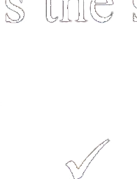

第四部分Part IVЧасть IV
第19—20题：选择正确答案。Questions 19-20: Choose the correct answer for each question.Вопросы 19-20: Выберите правильный ответ на каждый вопрос.
Qǐngwèn xiànzài jǐ diǎn le?例如： 请问 现在 几 点 了？★说话人 想 知道 什么？shíjiānA 时间míngziB 名字fángjiānhàoC 房间号
Excuse me, what time is it now?
What does the speaker want to know?
A time
B name
C room numberИзвините, который сейчас час?
Что хочет знать говорящий?
A время
B имя
C номер комнаты我 非常 喜欢 我 的 中文 名字。★说话人 喜欢 什么？xīn diànnǎoA 新 电脑Zhōngguó càiB 中国 菜Zhōngwén míngziC 中文 名字
Jīntiān bā hào, nǐ jǐ hào xiūxi?今天 8 号，你 几 号 休息？★说话人 想 知道 什么？jīntiān jǐ hàoA 今天 几 号nǎ tiān xiūxiB 哪 天 休息xīngqī jǐ shàngbānC 星期 几 上班